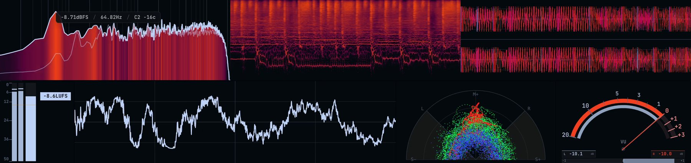
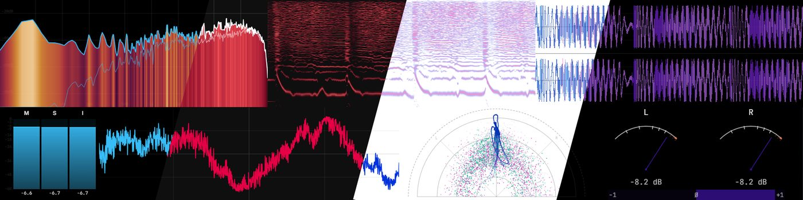

对应上游同一版本号
Release status / 版本状态
0.4.0-beta：首个公开测试版。
这是 Prism 中文汉化的首发版本，对应上游同一版本号。先用可用的中文桌面界面覆盖日常操作，再在真实使用中继续校对与跟进上游。
Beta 说明
0.4.0-beta 是首个公开版本，不是功能冻结版。当前汉化以桌面版界面与说明文本为主，VST3 / AU / CLAP 插件与终端界面尚未逐项验证；首发版本仍在跟进上游。遇到译文错漏或界面显示异常，请通过下方反馈入口告知。

Features / 原版功能
八种仪表，拼成一块自己的机架。
以下内容按 Prism 官方仓库整理，说明原版能做什么；截图取自原版英文界面，用于对照界面位置与结构。
01 · 机架与排布
每个仪表单独设置，再拼成一块自己的机架
八种仪表各自独立配置：FFT 尺寸、频谱倾斜、Log / Mel / 线性刻度、触发方式、0 VU 参考与缩放比例，改一个不会牵动其他仪表。
尺寸与位置可随手拖动，支持的仪表还能旋转、拆成独立窗口，或置顶在其他程序之上；整套布局可存成配置，换了场合再调回来。Windows 下还能让机架停靠在一个显示器上，为它预留屏幕空间。

02 · 配色与主题
配色与主题都可整体替换
线条、填充与热度色随主题整体替换；瀑布图可在主题色与热度色之间切换，矢量示波器可开启多频段 RGB，按颜色分辨各频段的相位分布。
界面以深色为底，仪表颜色只作用于显示，测量读数与数值本身不受影响。
Eight scopes / 八种仪表
同一套分析核心，八种读法。
桌面版、插件版与终端界面共用同一套分析核心，下面按官方仓库的顺序逐项列出；括号内为原版界面上的英文名称，汉化时以中文译名为主。
-
01
频谱仪
Spectrum AnalyzerFFT 频谱，带校准的 dBFS 电平，可调 FFT 尺寸与频谱倾斜，支持 Log / Mel / 线性刻度、热图与填充两种显示，并给出峰值与音高读数。
-
02
示波器
Oscilloscope时域波形，按基频锁定音高并使用亚采样触发，画面不会来回抖动。
-
03
矢量示波器
Vectorscope全频段立体声相位分析，XY、极坐标与 M/S 线性三种视图，带校准刻度、缩放与可选的多频段 RGB。
-
04
瀑布图
Waterfall频谱历史层层叠起，可回看 1–30 秒，脊线密度自适应，桌面版、终端界面与插件均可用。
-
05
声谱图
Spectrogram频率随时间滚动的谱图，Log / Mel / 线性刻度，可做立体声能量分析，Sharp 与 Sharper 两种频率重分配。
-
06
VU 表
VU Meter按 300 毫秒特性表针，0 VU 参考可调，附立体声相关度，指针与条形两种样式。
-
07
响度表
Loudness Meter按 ITU-R BS.1770 给出瞬时、短时与整体 LUFS，并显示真峰值活动。
-
08
波形显示
Waveform单声道或立体声滚动波形，用 min/max 采样保留瞬态，可选多频段能量着色。
截图取自软件原版（英文界面），用于说明各功能的位置与界面结构。汉化以桌面版界面与说明文本为主；插件版与终端界面如何处理，确定后会另行说明。
Download / 获取方式
两种汉化包，内容一致。
希望直接使用中文桌面界面，按习惯在安装包与便携版里选一个即可；两个包内容一致，只是打包方式不同。需要对照原文或自行配置，请取用官方原版。
01
下载安装包
汉化版 · 安装包
已内置中文桌面界面，双击安装并自动创建开始菜单项与卸载项，适合固定在一台机器上长期使用。
0.4.0-beta · Windows · 安装程序
02
下载便携版
汉化版 · 便携版
解压后直接运行，不写入系统、不留安装记录，可放入 U 盘随身携带；与安装包界面、功能一致。
0.4.0-beta · Windows · .zip 压缩包
03
前往官网
软件本体（未汉化）
上游发布的原始安装包，界面为英文，未作任何改动。需要对照原文、自行配置或处理插件版与终端界面，均以此版本为基础。
官方原始版本 · 未经修改
Beta 提示：本页下载的是 0.4.0-beta 首发汉化版，安装包与便携版内容一致；版本仍在跟进上游，反馈入口见 已知问题。
Known issues / 已知问题
先把范围说清楚，再收集问题。
下面不是猜测清单，而是本次首发版本已经确认的覆盖限制与待验证项；具体个案需要结合界面位置与实际版本判断。
插件版与终端界面尚未逐项验证
本次汉化以桌面版界面与说明文本为主。VST3 / AU / CLAP 插件与 prism-tui 的中文显示、术语与排版尚未逐项核对，确定处理方式后会另行说明。
Beta 阶段可能仍有个别译文错漏
首发版本难免存在译名不统一、断行不理想或界面显示异常。遇到时请附上界面位置、操作步骤与截图，便于定位具体文本。
后续上游变更尚未合并
0.4.0-beta 对应上游同一版本号，首发版本仍在跟进上游。上游后续新增的界面文本与说明不在当前版本覆盖范围内。
Feedback / 反馈
遇到译文错漏或界面显示异常？
请附上 Prism 版本、界面位置、操作步骤与截图，发送邮件至 zjh041106@qq.com。仅凭文字描述也可以，但截图能更快确认问题。
Specs / 规格
规格
- 软件
- Prism —— 免费开源的实时音频分析与电平表机架
- 形态
- 桌面应用（机架界面）· VST3 / AU / CLAP 插件 · 终端界面 prism-tui
- 平台
- Windows · macOS · Linux（汉化版目前仅提供 Windows）
- 输入
- 系统音频与设备输入，左右声道可分别选择来源，路由按来源保存
- 界面语言
- 中文（桌面版汉化）· English（官方原版）
- 汉化版本
- 0.4.0-beta（安装包 / 便携版）
- 发布状态
- 已发布 · 2026 年 11 月 11 日，后续跟进上游更新
- 许可证
- GNU GPL v3.0
关于原版 Prism
中文
Prism 是一款免费开源的音频分析与电平表机架，Windows、macOS 与 Linux 均可运行。既可监听系统声音，也可监听某个输入设备，把需要的实时仪表摆成自己的机架，存成配置随时调回。
- 内置八种实时仪表，每个都能单独设置尺寸、颜色与测量参数
- 同一套仪表提供 VST3 / AU / CLAP 插件版本，可直接放进数字音频工作站
- 另有原生终端界面，不装图形环境也能看频谱与电平
- 桌面版可把系统声音或设备输入分别路由到左右声道，路由按来源分别保存
- 可选接入 Astra 显示正在播放的曲目、封面与播放控制，不接入也能独立使用
- 许可证 GNU GPL v3.0，官方页面为 astramusic.dev/prism
English
Prism is a free, open-source audio analyzer and meter rack for Windows, macOS, and Linux. Monitor system audio or an input with a configurable set of real-time scopes and meters, arrange them however you like, and save the setup as a profile.
- Eight real-time scopes and meters: spectrum analyzer, oscilloscope, vectorscope, waterfall, spectrogram, VU meter, loudness meter, and waveform.
- The same analyzers are available as VST3 / AU / CLAP plugins, and Prism includes a native terminal interface for lightweight monitoring.
- The desktop app's channel routing matrix selects source channels independently for left and right, with routes saved per source.
- Optional Astra integration shows now-playing tracks, cover art, and playback controls; Prism works standalone without it.
- Licensed under the GNU General Public License v3.0.
介绍文案取自 Prism 官方仓库 README，功能细节以该仓库为准